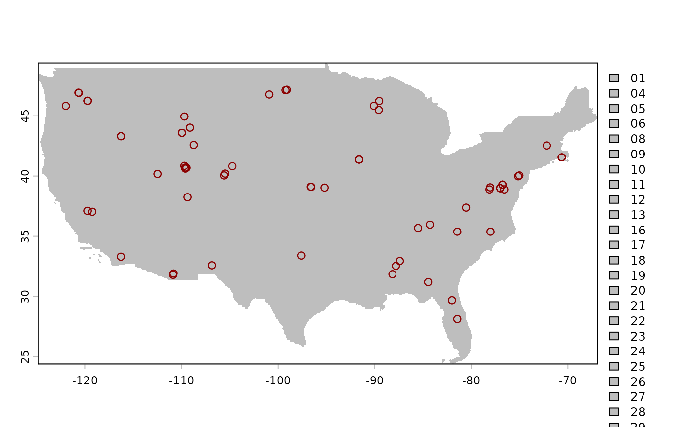
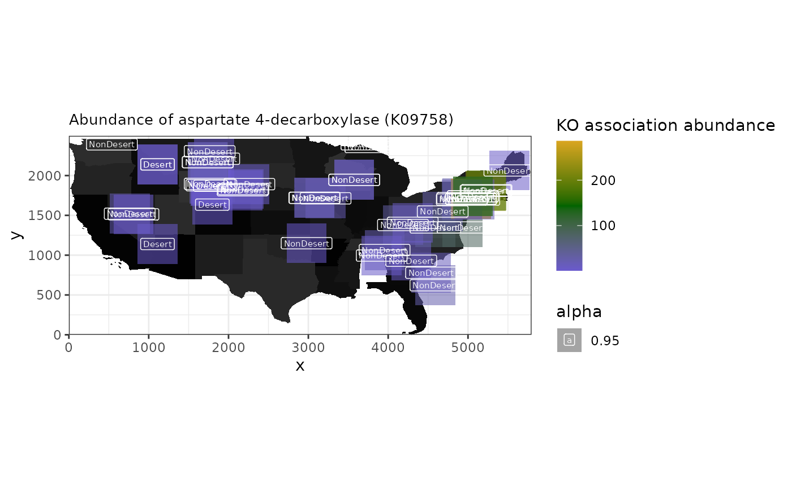

spammR microbiome evaluation
Yannick Mahlich
May 12, 2026
Source:vignettes/spatMicrobiome.Rmd
spatMicrobiome.RmdThis vignette walks you through an example of using spammR for metagenomic data across a geographic area.
R and other dependencies
We require a few packages for the mapping requirements that are beyond the basic spammR tools.
The following R packages are required: - spammR - sf relies on other non R-libraries (see Installing for more details on how to install sf including the dependencies)
The following non-R packages may be required: - GEOS - PROJ - GDAL
Metagenomic data formatting requirements
The data that we will be working with is a KEGG ortholog enrichment from the 1000 soils project. The 1000 soils project has the nice feature that each location has two sampling at different depths (‘top’ and ‘bottom’). We will use this circumstance in combination with the KO enrichment to generate a pathway enrichment for each sample location and depth and then visualize the differential between the two depths.
We have downloaded the 1000 soil data and stored it as two separate files that can be loaded directly in the package.
The first file is the actual KO measurements.
We can then create a metadata file that The KO metadata table will contain a mapping from KO identifier - row names in the Omics Measurement table - to a more descriptive annotation.For testing purposes this currently is only the row names & incremented integer values.
oneKSoilsOmicsMeta <- data.frame(KO = character(nrow(oneKSoilsData)))
oneKSoilsOmicsMeta["KO"] <- rownames(oneKSoilsData)
oneKSoilsOmicsMeta["annotation"] <- seq(1, by = 1,
length.out = nrow(oneKSoilsOmicsMeta))
oneKSoilsOmicsMeta["annotation"] <- lapply(oneKSoilsOmicsMeta["annotation"],
as.character)
head(oneKSoilsOmicsMeta)## KO annotation
## 1 K00001 1
## 2 K00002 2
## 3 K00003 3
## 4 K00004 4
## 5 K00005 5
## 6 K00006 6Next we need to import the lat/long information of the locations
where the 1000 soil project samples where extracted. The file was
retrieved from the 1000 Soils
Project Shiny App. The metadata was retrieved by using the
Query>Information tab. On the left side (the “Information Menu”) we
select SAMPLE_ID, latitude &
longitude and download the resulting mapping.
Not all Sample_ID entries have complete lat/long data.
To generate a sf object (see below) which will be needed as
input to create a terra:SpatRaster object the input table
can only contain complete cases (i.e. no NaN values). The
sample metadata contains information about the type of Biome, the layer
of the soil sample (‘top’ or ‘bottom’), and the pH, for example, as well
as the coordinates.
## Sample_ID Site_Code Core_Layer latitude longitude Elev.m Soil.Temperature.C
## 1 ANZA_TOP ANZA TOP 33.30533 -116.25401 191 42.7
## 2 ANZA_BTM ANZA BTM 33.30533 -116.25401 191 42.7
## 3 BLAN_TOP BLAN TOP 39.05941 -78.07207 174 19.7
## 4 BLAN_BTM BLAN BTM 39.05941 -78.07207 174 19.7
## 5 CFS1_TOP CFS1 TOP 35.38280 -78.03818 24 18.5
## 6 CFS1_BTM CFS1 BTM 35.38280 -78.03818 24 18.5
## VolWaterContent.m3.m3 pH K_mg_per_kg SO4.S_mg_per_kg B_mg_per_kg
## 1 0.0490 8.75 107 4 0.25
## 2 0.0490 9.20 82 4 0.20
## 3 0.1740 6.50 189 10 0.42
## 4 0.1740 5.92 122 19 0.27
## 5 0.0515 6.66 231 NA NA
## 6 0.0515 6.98 107 6 0.26
## Zn_mg_per_kg Mn_mg_per_kg Cu_mg_per_kg Fe_mg_per_kg Ca_Meq_per_100_g
## 1 0.2 1.9 0.1 13 3.27
## 2 0.3 1.1 0.1 14 3.05
## 3 0.7 28.3 0.7 54 5.47
## 4 0.2 15.9 0.5 16 4.31
## 5 NA NA NA NA 2.41
## 6 0.3 0.7 0.5 18 2.93
## Mg_Meq_per_100_g Na_Meq_per_100_g BIOME biome_name
## 1 0.26 0.10 13 Deserts & Xeric Shrublands
## 2 0.42 0.08 13 Deserts & Xeric Shrublands
## 3 0.81 0.05 4 Temperate Broadleaf & Mixed Forests
## 4 0.57 0.06 4 Temperate Broadleaf & Mixed Forests
## 5 0.68 0.08 5 Temperate Conifer Forests
## 6 1.14 0.06 5 Temperate Conifer Forests
ggplot2::ggplot(oneKSoilsMeta, aes(x = Core_Layer, y = pH, fill = biome_name)) +
geom_boxplot()## Warning: Removed 4 rows containing non-finite outside the scale range
## (`stat_boxplot()`).
Geographic map formatting requirements
Maps can be downloaded from public repositories as a ‘shape’ file that can then be processed for coordinates and visualization. Here we show how to retrieve a shape file d from the US Census Bureau with the following parameters:
- Year = 2024
- Layer type = “States (and equivalent)”
Or downloaded in a zip file from the [census FTP site] (https://www2.census.gov/geo/tiger/TIGER2024/STATE/).
The code chunk below will not be executed but is displayed as example of how to load a downloaded shape file using the sf package.
us_map <- sf::st_read("../data/tl_2024_us_state/tl_2024_us_state.shp",
quiet = TRUE)
us_mapInstead will load the file from the supplied rda
file:
This map contains the entire US, so for visualization purposes we focus only on the continental US.
us_continental <- c(
"WV", "FL", "IL", "MN", "MD", "RI", "ID", "NH", "NC", "VT",
"CT", "DE", "NM", "CA", "NJ", "WI", "OR", "NE", "PA", "WA",
"LA", "GA", "AL", "UT", "OH", "TX", "CO", "SC", "OK", "TN",
"WY", "ND", "KY", "ME", "NY", "NV", "MI", "AR", "MS", "MO",
"MT", "KS", "IN", "SD", "MA", "VA", "DC", "IA", "AZ"
)
s_us_cont <- us_map %>%
.[.$STUSPS %in% us_continental, ] %>%
vect()
s_us_cont## class : SpatVector
## geometry : polygons
## dimensions : 49, 15 (geometries, attributes)
## extent : -124.849, -66.88544, 24.39631, 49.38448 (xmin, xmax, ymin, ymax)
## coord. ref. : lon/lat NAD83 (EPSG:4269)
## names : REGION DIVISION STATEFP STATENS GEOID GEOIDFQ STUSPS NAME LSAD MTFCC (and 5 more)
## type : <chr> <chr> <chr> <chr> <chr> <chr> <chr> <chr> <chr> <chr>
## values : 3 5 54 01779805 54 0400000US54 WV West Virginia 00 G4000
## 3 5 12 00294478 12 0400000US12 FL Florida 00 G4000
## 2 3 17 01779784 17 0400000US17 IL Illinois 00 G4000
## ...Now that we have the coordinate information we need to convert it to
pixels using the terra package, which requires creating a
rasterization template using the” terra::SpatRaster. From
this object we can generate a rasterized image while retaining the
location information and ability to project the map into a different map
projection.
The terra package can read in the shape file as
follows:
template <- terra::rast(
s_us_cont,
res = 0.01
)And then create a rasterized landmass of the continental US:
# us_raster <- rasterize(s_us_cont, template, background=0)
# us_raster <- rasterize(as.lines(s_us_cont), template, field='STATEFP',
# touches=TRUE)
us_raster <- terra::rasterize(s_us_cont, template, field = "STATEFP")Mapping soil locations to map
Next we generate an sf object from the soils coordinate
data so that we can then map it to the same rasterized image as the US
map object:
oneKSoilsMeta <- oneKSoilsMeta[!is.na(oneKSoilsMeta$latitude) &
!is.na(oneKSoilsMeta$longitude), ]
coords <- sf::st_as_sf(oneKSoilsMeta, coords = c("longitude", "latitude"),
remove = TRUE)
sf::st_crs(coords) <- sf::st_crs(s_us_cont)
coords## Simple feature collection with 127 features and 19 fields
## Geometry type: POINT
## Dimension: XY
## Bounding box: xmin: -121.9607 ymin: 28.12584 xmax: -70.63536 ymax: 47.16306
## Geodetic CRS: NAD83
## First 10 features:
## Sample_ID Site_Code Core_Layer Elev.m Soil.Temperature.C
## 1 ANZA_TOP ANZA TOP 191 42.7
## 2 ANZA_BTM ANZA BTM 191 42.7
## 3 BLAN_TOP BLAN TOP 174 19.7
## 4 BLAN_BTM BLAN BTM 174 19.7
## 5 CFS1_TOP CFS1 TOP 24 18.5
## 6 CFS1_BTM CFS1 BTM 24 18.5
## 7 CFS2_TOP CFS2 TOP 24 23.0
## 8 CFS2_BTM CFS2 BTM 24 23.0
## 9 CLBJ_BTM CLBJ BTM 274 18.4
## 10 CLBJ_TOP CLBJ TOP 274 18.4
## VolWaterContent.m3.m3 pH K_mg_per_kg SO4.S_mg_per_kg B_mg_per_kg
## 1 0.0490 8.75 107 4 0.25
## 2 0.0490 9.20 82 4 0.20
## 3 0.1740 6.50 189 10 0.42
## 4 0.1740 5.92 122 19 0.27
## 5 0.0515 6.66 231 NA NA
## 6 0.0515 6.98 107 6 0.26
## 7 0.0695 6.66 134 4 0.11
## 8 0.0695 6.78 66 2 0.06
## 9 0.3380 4.94 144 5 0.18
## 10 0.3380 7.28 156 6 0.40
## Zn_mg_per_kg Mn_mg_per_kg Cu_mg_per_kg Fe_mg_per_kg Ca_Meq_per_100_g
## 1 0.2 1.9 0.1 13 3.27
## 2 0.3 1.1 0.1 14 3.05
## 3 0.7 28.3 0.7 54 5.47
## 4 0.2 15.9 0.5 16 4.31
## 5 NA NA NA NA 2.41
## 6 0.3 0.7 0.5 18 2.93
## 7 3.6 5.1 2.2 48 1.76
## 8 0.3 2.0 0.3 17 1.13
## 9 0.4 9.6 0.2 21 1.42
## 10 1.6 5.9 0.2 12 9.02
## Mg_Meq_per_100_g Na_Meq_per_100_g BIOME
## 1 0.26 0.10 13
## 2 0.42 0.08 13
## 3 0.81 0.05 4
## 4 0.57 0.06 4
## 5 0.68 0.08 5
## 6 1.14 0.06 5
## 7 0.50 0.05 4
## 8 0.32 0.04 4
## 9 1.08 0.10 8
## 10 1.04 0.07 8
## biome_name geometry
## 1 Deserts & Xeric Shrublands POINT (-116.254 33.30533)
## 2 Deserts & Xeric Shrublands POINT (-116.254 33.30533)
## 3 Temperate Broadleaf & Mixed Forests POINT (-78.07207 39.05941)
## 4 Temperate Broadleaf & Mixed Forests POINT (-78.07207 39.05941)
## 5 Temperate Conifer Forests POINT (-78.03818 35.3828)
## 6 Temperate Conifer Forests POINT (-78.03818 35.3828)
## 7 Temperate Broadleaf & Mixed Forests POINT (-81.43417 35.38329)
## 8 Temperate Broadleaf & Mixed Forests POINT (-81.43417 35.38329)
## 9 Temperate Grasslands, Savannas & Shrublands POINT (-97.57043 33.40164)
## 10 Temperate Grasslands, Savannas & Shrublands POINT (-97.57043 33.40164)Using the same rasterization template as we used above, we can make the soils coordinates fit on pixes on the US map.
coords_rast <- terra::rasterize(coords, template)
coords_rast## class : SpatRaster
## size : 2499, 5796, 1 (nrow, ncol, nlyr)
## resolution : 0.01, 0.01 (x, y)
## extent : -124.849, -66.88897, 24.39631, 49.38631 (xmin, xmax, ymin, ymax)
## coord. ref. : lon/lat NAD83 (EPSG:4269)
## source(s) : memory
## name : last
## min value : 1
## max value : 1get the “Pixel” x/y (NOT lat/long x/y) of metagenome samples
Finally to retrieve the “pixel” coordinates instead of the x/y
(lat/long) coordinates that are recorded in the
terra::SpatRaster objects the following procedure is
employed:
- use
extract()to get the cells which the coordinates are projected into in the raster image - use
lapply()get the raster coordinates (‘pixel’ x/y) for each row withterra::rowColFromCell() - use
cbind()to combine the cells, ‘pixel’ x/y and original sample coordinatedata.frame - use
dplyr::rename()to clean updata.frame
This process does come with slight differences in lat/long. Most likely due to the rasterization process?
## ID last cell x y
## 1 1 1 9320828 -116.25397 33.30131
## 2 2 1 9320828 -116.25397 33.30131
## 3 3 1 5986150 -78.07397 39.06131
## 4 4 1 5986150 -78.07397 39.06131
## 5 5 1 8119082 -78.03397 35.38131
## 6 6 1 8119082 -78.03397 35.38131
cells_tmp <- terra::extract(coords_rast, coords, xy = TRUE, cells = TRUE)
xy_rast <- lapply(cells["cell"], function(x) rowColFromCell(coords_rast, x))
cells <- cells_tmp %>%
cbind(., oneKSoilsMeta, xy_rast) %>%
dplyr::rename(., y_pixels = "cell.1", x_pixels = "cell.2") %>%
subset(., select = -c(x, y, ID, last))
cells$y_pixels <- nrow(coords_rast) - cells$y_pixelsThose need to be finally written out / transferred into the
spammR package for further use.
Exporting the rasterized map
The rasterized map can be exported with the command below.
terra::writeRaster(us_raster, "us_map.png", NAflag = 0, overwrite = TRUE)## Warning in x@pntr$writeRaster(opt): GDAL Message 6: PNG driver doesn't support data type Int32. Only eight bit (Byte) and sixteen bit (UInt16) bands supported. Defaulting to ByteExamplary plotting
coords_test <- sf::st_as_sf(oneKSoilsMeta,
coords = c("longitude", "latitude"),
remove = TRUE)
sf::st_crs(coords_test) <- sf::st_crs(s_us_cont)
plot(us_raster, col = "grey")
# lines(as.polygons(us_raster), col='black')
plot(coords_test, col = "darkred", add = TRUE)## Warning in plot.sf(coords_test, col = "darkred", add = TRUE): ignoring all but
## the first attribute
Using spammR on metagenomic geographic data
Now that the data are properly formatted we can put them into a
SpatialExperiment object that is needed by spammR. The data
is comprised of:
- Omics Measurements: species abundances across regions
- Omics Metadata: metadata from these species
- Sample Metadata: information about the sample location
- Image files (generated by the above code): file representing image sample
Sample Metadata
Here we build the sample metadata table given the previously generated coordinate raster during the rasterization of the map. The SpatialExperiment object requires information about the x and y coordinates and information about each spot in the image for which we have omics data.
dm <- cells
rownames(dm) <- dm$Sample_ID
# dm[,1] <- NULL
dm[, "cell"] <- NULL
dm[, "longitude.1"] <- NULL
dm[, "latitude.1"] <- NULL
dm[, "Image"] <- 0
dm[, "x_max"] <- ncol(coords_rast)
dm[, "y_max"] <- nrow(coords_rast)
dm[, "x_origin"] <- 0
dm[, "y_origin"] <- 0
dm[, "spot_height"] <- 500
dm[, "spot_width"] <- 500
dm[, "above_40_deg_lat"] <- dplyr::if_else(dm[, "latitude"] >= 40,
true = 1, false = 0)
dm[, "psychrophile"] <- dplyr::if_else(dm[, "Soil.Temperature.C"] <= 15,
true = 1, false = 0)
dm[, "Core_Layer_bin"] <- dplyr::if_else(dm[, "Core_Layer"] == "TOP",
true = "TOP", false = "BTM")
dm[, "Desert"] <- dplyr::if_else(dm[, "BIOME"] == "13",
true = "Desert", false = "NonDesert")
data_meta <- dm
head(data_meta)## Sample_ID Site_Code Core_Layer latitude longitude Elev.m
## ANZA_TOP ANZA_TOP ANZA TOP 33.30533 -116.25401 191
## ANZA_BTM ANZA_BTM ANZA BTM 33.30533 -116.25401 191
## BLAN_TOP BLAN_TOP BLAN TOP 39.05941 -78.07207 174
## BLAN_BTM BLAN_BTM BLAN BTM 39.05941 -78.07207 174
## CFS1_TOP CFS1_TOP CFS1 TOP 35.38280 -78.03818 24
## CFS1_BTM CFS1_BTM CFS1 BTM 35.38280 -78.03818 24
## Soil.Temperature.C VolWaterContent.m3.m3 pH K_mg_per_kg
## ANZA_TOP 42.7 0.0490 8.75 107
## ANZA_BTM 42.7 0.0490 9.20 82
## BLAN_TOP 19.7 0.1740 6.50 189
## BLAN_BTM 19.7 0.1740 5.92 122
## CFS1_TOP 18.5 0.0515 6.66 231
## CFS1_BTM 18.5 0.0515 6.98 107
## SO4.S_mg_per_kg B_mg_per_kg Zn_mg_per_kg Mn_mg_per_kg Cu_mg_per_kg
## ANZA_TOP 4 0.25 0.2 1.9 0.1
## ANZA_BTM 4 0.20 0.3 1.1 0.1
## BLAN_TOP 10 0.42 0.7 28.3 0.7
## BLAN_BTM 19 0.27 0.2 15.9 0.5
## CFS1_TOP NA NA NA NA NA
## CFS1_BTM 6 0.26 0.3 0.7 0.5
## Fe_mg_per_kg Ca_Meq_per_100_g Mg_Meq_per_100_g Na_Meq_per_100_g BIOME
## ANZA_TOP 13 3.27 0.26 0.10 13
## ANZA_BTM 14 3.05 0.42 0.08 13
## BLAN_TOP 54 5.47 0.81 0.05 4
## BLAN_BTM 16 4.31 0.57 0.06 4
## CFS1_TOP NA 2.41 0.68 0.08 5
## CFS1_BTM 18 2.93 1.14 0.06 5
## biome_name y_pixels x_pixels Image x_max
## ANZA_TOP Deserts & Xeric Shrublands 890 860 0 5796
## ANZA_BTM Deserts & Xeric Shrublands 890 860 0 5796
## BLAN_TOP Temperate Broadleaf & Mixed Forests 1466 4678 0 5796
## BLAN_BTM Temperate Broadleaf & Mixed Forests 1466 4678 0 5796
## CFS1_TOP Temperate Conifer Forests 1098 4682 0 5796
## CFS1_BTM Temperate Conifer Forests 1098 4682 0 5796
## y_max x_origin y_origin spot_height spot_width above_40_deg_lat
## ANZA_TOP 2499 0 0 500 500 0
## ANZA_BTM 2499 0 0 500 500 0
## BLAN_TOP 2499 0 0 500 500 0
## BLAN_BTM 2499 0 0 500 500 0
## CFS1_TOP 2499 0 0 500 500 0
## CFS1_BTM 2499 0 0 500 500 0
## psychrophile Core_Layer_bin Desert
## ANZA_TOP 0 TOP Desert
## ANZA_BTM 0 BTM Desert
## BLAN_TOP 0 TOP NonDesert
## BLAN_BTM 0 BTM NonDesert
## CFS1_TOP 0 TOP NonDesert
## CFS1_BTM 0 BTM NonDesertCreate SpatialExperiment object
Now that our metadata is formatted correctly we can create the spatialExperiment object.
microbiome.spe <- spammR::convert_to_spe(
oneKSoilsData, ## pooled data table
data_meta, ## pooled metadata
oneKSoilsOmicsMeta, ## protein identifiers
feature_meta_colname = "KO", # column name
spatial_coords_colnames = c("x_pixels", "y_pixels"),
image_files = c("us_map.png"),
image_sample_ids = "1000 Soils",
sample_id = "1000 Soils",
image_ids = c("0"),
assay_name = "KO"
)Metagenomic differential expression and enrichment
The pathway enrichment analysis is done based on the presence and
absence of KO associations found within the individual metagenomes. As
such we are not strictly working with “gene abundances” that would be
expected for a more traditional differential expression and pathway
enrichment analysis. Conversely the “abundance” measurements of the
individual KOs also distribute differently to what would be expected. To
this end we are relying on the count based differential expression
analysis that is based on limma::voom.
diff_ex <- spammR::calc_spatial_diff_ex(
microbiome.spe,
assay_name = "KO",
count_based = TRUE,
log_transformed = FALSE,
category_col = "Desert"
)## We found 562 features with a logFC greater than 1 and
## an ajusted p-value less than 0.05
sig_ko <- subset(rowData(diff_ex), Desert_vs_NonDesert.adj.P.Val.limma < 0.05)
ups <- subset(sig_ko, Desert_vs_NonDesert.logFC.limma > 0)
downs <- subset(sig_ko, Desert_vs_NonDesert.logFC.limma < 0)
print(paste(
"We found", nrow(sig_ko), "significantly differentally abundant KOs",
nrow(ups), "upregulated KOs and", nrow(downs), "downregulated"
))## [1] "We found 575 significantly differentally abundant KOs 483 upregulated KOs and 92 downregulated"## # A tibble: 483 × 8
## KO annotation Desert_vs_NonDesert.logFC.limma Desert_vs_NonDesert.AveEx…¹
## <chr> <chr> <dbl> <dbl>
## 1 K21136 11079 4.30 5.91
## 2 K15547 8600 4.15 4.98
## 3 K09758 5602 4.07 5.42
## 4 K01535 1144 4.04 5.02
## 5 K15549 8602 4.04 5.18
## 6 K07085 4377 3.87 7.23
## 7 K12137 6892 3.87 6.94
## 8 K13926 7769 3.71 5.59
## 9 K05817 3685 3.64 5.74
## 10 K21134 11077 3.56 7.72
## # ℹ 473 more rows
## # ℹ abbreviated name: ¹Desert_vs_NonDesert.AveExpr.limma
## # ℹ 4 more variables: Desert_vs_NonDesert.t.limma <dbl>,
## # Desert_vs_NonDesert.P.Value.limma <dbl>,
## # Desert_vs_NonDesert.adj.P.Val.limma <dbl>,
## # Desert_vs_NonDesert.B.limma <dbl>Spatial heatmap showing abundance of significant KO
K09758 (aspartate 4-decarboxylase) being one of the “upregulated KOs”
we can visualize the abundances across the different sampling locations
with spammr::spatial_heatmap()
spatial_heatmap(
microbiome.spe,
feature = "K09758",
# feature_type = 'KO',
assay_name = "KO",
sample_id = "1000 Soils",
image_id = "0",
sample_label_size = 2.0,
title_size = 10,
label_column = "Desert",
metric_display = "KO association abundance",
plot_title = "Abundance of aspartate 4-decarboxylase (K09758)",
interactive = FALSE
)## Warning: Removed 2 rows containing missing values or values outside the scale range
## (`geom_label()`).
Pathway enrichment
For the pathway enrichment part of the anaysis we first need to load “genesets” in the required format for leapR that will be called internally. The geneset is effectively a list of KOs that are associated with individual KEGG pathways.
kk <- download.file("https://api.figshare.com/v2/file/download/55158818",
destfile = "kegg.rda", quiet = TRUE)
load("kegg.rda")
file.remove("kegg.rda")## [1] TRUENext we are performing the enrichment analysis with a p-value cut-off of p-value < 0.05
ora.res <- spammR::enrich_ora(diff_ex, geneset = keggPathwayToKo,
geneset_name = "KEGG pathways",
feature_column = "KO", pval_thresh = 0.05)
filtered_res <- ora.res %>%
rownames_to_column(., var = 'KEGG_Pathway') %>%
as_tibble(.) %>%
filter(., oddsratio > 1 & BH_pvalue < 0.05) %>%
arrange(-oddsratio) %>%
select(KEGG_Pathway, oddsratio, BH_pvalue)
pathway_names <- cbind(keggPathwayToKo$name, keggPathwayToKo$desc) %>%
as_tibble() %>%
rename(., KEGG_Pathway = V1, KEGG_pathway_name = V2)## Warning: The `x` argument of `as_tibble.matrix()` must have unique column names if
## `.name_repair` is omitted as of tibble 2.0.0.
## ℹ Using compatibility `.name_repair`.
## This warning is displayed once per session.
## Call `lifecycle::last_lifecycle_warnings()` to see where this warning was
## generated.
left_join(filtered_res, pathway_names, by = 'KEGG_Pathway')## # A tibble: 8 × 4
## KEGG_Pathway oddsratio BH_pvalue KEGG_pathway_name
## <chr> <dbl> <dbl> <chr>
## 1 map01320 8.25 0.000266 Sulfur cycle
## 2 map00540 7.64 0.000380 Lipopolysaccharide biosynthesis
## 3 map00480 5.00 0.0302 Glutathione metabolism
## 4 map00362 4.91 0.0000118 Benzoate degradation
## 5 map00920 4.44 0.000266 Sulfur metabolism
## 6 map00627 3.98 0.0183 Aminobenzoate degradation
## 7 map02020 2.70 0.000000387 Two-component system
## 8 map02010 2.25 0.000266 ABC transporters
ora.res <- tibble::rownames_to_column(ora.res, "pathways")
pathway_prots <- subset(ora.res, pathways == "map01320") |>
dplyr::select(ingroupnames)
pathway_prots <- unlist(strsplit(pathway_prots[1, ], split = ", "))
spatial_heatmap(
microbiome.spe,
feature = pathway_prots,
assay_name = "KO",
sample_id = "1000 Soils",
image_id = "0",
label_column = "Desert",
sample_label_size = 2.0,
title_size = 10,
metric_display = "Enriched KO Groups",
plot_title = "Sulfur cycle",
interactive = FALSE
)## Warning: Removed 2 rows containing missing values or values outside the scale range
## (`geom_label()`).
Session Information
## R version 4.6.0 (2026-04-24)
## Platform: x86_64-pc-linux-gnu
## Running under: Ubuntu 24.04.4 LTS
##
## Matrix products: default
## BLAS: /usr/lib/x86_64-linux-gnu/openblas-pthread/libblas.so.3
## LAPACK: /usr/lib/x86_64-linux-gnu/openblas-pthread/libopenblasp-r0.3.26.so; LAPACK version 3.12.0
##
## locale:
## [1] LC_CTYPE=C.UTF-8 LC_NUMERIC=C LC_TIME=C.UTF-8
## [4] LC_COLLATE=C.UTF-8 LC_MONETARY=C.UTF-8 LC_MESSAGES=C.UTF-8
## [7] LC_PAPER=C.UTF-8 LC_NAME=C LC_ADDRESS=C
## [10] LC_TELEPHONE=C LC_MEASUREMENT=C.UTF-8 LC_IDENTIFICATION=C
##
## time zone: UTC
## tzcode source: system (glibc)
##
## attached base packages:
## [1] stats4 stats graphics grDevices utils datasets methods
## [8] base
##
## other attached packages:
## [1] BiocFileCache_3.2.0 dbplyr_2.5.2
## [3] terra_1.9-27 sf_1.1-1
## [5] dplyr_1.2.1 magrittr_2.0.5
## [7] tibble_3.3.1 ggplot2_4.0.3
## [9] spammR_0.99.20 limma_3.68.2
## [11] SpatialExperiment_1.22.0 SingleCellExperiment_1.34.0
## [13] SummarizedExperiment_1.42.0 Biobase_2.72.0
## [15] GenomicRanges_1.64.0 Seqinfo_1.2.0
## [17] IRanges_2.46.0 S4Vectors_0.50.0
## [19] BiocGenerics_0.58.0 generics_0.1.4
## [21] MatrixGenerics_1.24.0 matrixStats_1.5.0
## [23] BiocStyle_2.40.0
##
## loaded via a namespace (and not attached):
## [1] RColorBrewer_1.1-3 jsonlite_2.0.0 wk_0.9.5
## [4] magick_2.9.1 farver_2.1.2 rmarkdown_2.31
## [7] fs_2.1.0 ragg_1.5.2 vctrs_0.7.3
## [10] spdep_1.4-2 memoise_2.0.1 rstatix_0.7.3
## [13] htmltools_0.5.9 S4Arrays_1.12.0 curl_7.1.0
## [16] broom_1.0.12 s2_1.1.9 SparseArray_1.12.2
## [19] Formula_1.2-5 sass_0.4.10 spData_2.3.5
## [22] KernSmooth_2.23-26 bslib_0.10.0 htmlwidgets_1.6.4
## [25] desc_1.4.3 httr2_1.2.2 impute_1.86.0
## [28] plotly_4.12.0 cachem_1.1.0 igraph_2.3.1
## [31] lifecycle_1.0.5 pkgconfig_2.0.3 Matrix_1.7-5
## [34] R6_2.6.1 fastmap_1.2.0 digest_0.6.39
## [37] ggnewscale_0.5.2 textshaping_1.0.5 RSQLite_3.52.0
## [40] ggpubr_0.6.3 labeling_0.4.3 filelock_1.0.3
## [43] httr_1.4.8 polyclip_1.10-7 abind_1.4-8
## [46] compiler_4.6.0 proxy_0.4-29 bit64_4.8.0
## [49] withr_3.0.2 S7_0.2.2 backports_1.5.1
## [52] carData_3.0-6 viridis_0.6.5 DBI_1.3.0
## [55] ggforce_0.5.0 ggsignif_0.6.4 MASS_7.3-65
## [58] rappdirs_0.3.4 DelayedArray_0.38.1 rjson_0.2.23
## [61] classInt_0.4-11 tools_4.6.0 units_1.0-1
## [64] otel_0.2.0 glue_1.8.1 grid_4.6.0
## [67] gtable_0.3.6 tzdb_0.5.0 class_7.3-23
## [70] tidyr_1.3.2 data.table_1.18.4 hms_1.1.4
## [73] utf8_1.2.6 tidygraph_1.3.1 sp_2.2-1
## [76] car_3.1-5 XVector_0.52.0 ggrepel_0.9.8
## [79] pillar_1.11.1 tweenr_2.0.3 lattice_0.22-9
## [82] bit_4.6.0 deldir_2.0-4 tidyselect_1.2.1
## [85] leapR_1.0.0 knitr_1.51 gridExtra_2.3
## [88] bookdown_0.46 xfun_0.57 graphlayouts_1.2.3
## [91] statmod_1.5.1 lazyeval_0.2.3 yaml_2.3.12
## [94] boot_1.3-32 evaluate_1.0.5 codetools_0.2-20
## [97] ggraph_2.2.2 BiocManager_1.30.27 cli_3.6.6
## [100] reticulate_1.46.0 systemfonts_1.3.2 jquerylib_0.1.4
## [103] Rcpp_1.1.1-1.1 png_0.1-9 pkgdown_2.2.0
## [106] readr_2.2.0 blob_1.3.0 viridisLite_0.4.3
## [109] scales_1.4.0 e1071_1.7-17 purrr_1.2.2
## [112] rlang_1.2.0